VinhKhanhAudioGuide
Hệ Thống Hướng Dẫn Âm Thanh
Full-stack enterprise: .NET MAUI (MVVM + DI) — ASP.NET Core 8 Razor Pages + Minimal API — SQL Server + EF Core — Cloudinary CDN — Edge TTS + Google TTS fallback — POI Change Request Workflow — Role-based RBAC (SystemAdmin / PoiAdmin).
Giới Thiệu Sản Phẩm
VinhKhanhAudioGuide (AudioLife) là hệ thống hướng dẫn âm thanh du lịch cho tuyến ẩm thực đường phố Vĩnh Khánh, Quận 4, TP.HCM. Sản phẩm kết hợp ứng dụng mobile .NET MAUI cho du khách, cổng quản trị ASP.NET Core Razor Pages cho ban vận hành và chủ địa điểm, Minimal API cho dữ liệu mobile, SQL Server qua EF Core, Cloudinary CDN cho audio, cùng dịch vụ Text-to-Speech tự động bằng Edge Neural Voices và Google TTS fallback.
Mục Tiêu Sản Phẩm
- Tự động giới thiệu địa điểm bằng audio khi du khách đến gần POI, giảm phụ thuộc vào hướng dẫn viên trực tiếp.
- Cung cấp nội dung đa ngôn ngữ cho du khách Việt Nam và quốc tế, hỗ trợ các ngôn ngữ vi, en, zh, ja, ko, fr.
- Cho phép người dùng xem bản đồ, tour, chi tiết địa điểm, phát audio, tải nội dung, tìm kiếm và theo dõi lịch sử nghe.
- Đồng bộ dữ liệu từ backend nhưng vẫn có local database trên mobile để cải thiện trải nghiệm khi mạng yếu.
Mục Tiêu Vận Hành
- SystemAdmin quản lý danh mục, địa điểm, tour, audio guide, người dùng, gói thanh toán, báo cáo và cấu hình hệ thống.
- PoiAdmin quản lý nội dung các địa điểm được phân quyền thông qua luồng đề xuất thay đổi, chờ duyệt và phê duyệt.
- Tự động sinh audio từ nội dung kịch bản, lưu lên Cloudinary và phát qua URL CDN thay vì phụ thuộc file nội bộ.
- Kiểm soát quyền truy cập app bằng QR, session thiết bị, heartbeat, subscription và trạng thái thanh toán.
Mục Tiêu Kỹ Thuật
- Tách rõ mobile, web admin, API, service nghiệp vụ, lưu trữ audio và database để dễ bảo trì.
- Sử dụng MVVM + Dependency Injection trên mobile và EF Core code-first trên web backend.
- Ghi nhận listening history, app activity log và session để phục vụ báo cáo vận hành.
- Duy trì RBAC hai vai trò chính: SystemAdmin và PoiAdmin, hạn chế truy cập theo thư mục Razor Pages.
Kiến Trúc Hệ Thống
Kiến trúc hiện tại là mô hình client-server: mobile app là client chính cho du khách; web app vừa là admin portal vừa là backend API; SQL Server là nguồn dữ liệu trung tâm; Cloudinary là lớp lưu trữ/phân phối audio; các dịch vụ TTS sinh file audio từ kịch bản quản trị.
flowchart LR
Tourist[Tourist / mobile device] --> Mobile[.NET MAUI Mobile App]
Mobile --> LocalDb[(SQLite Local Cache)]
Mobile --> Api[Minimal API /api/mobile]
Mobile --> Gps[Geolocation Service]
Mobile --> Player[Audio Playback Service]
Api --> Web[ASP.NET Core 8 Web App]
Admin[SystemAdmin] --> Web
Poi[PoiAdmin / Shop] --> Web
Web --> Ef[EF Core DbContext]
Ef --> Sql[(SQL Server AudioDB)]
Web --> Tts[Edge TTS Service]
Tts --> Google[Google TTS Fallback]
Web --> Cloudinary[Cloudinary Audio CDN]
Player --> Cloudinary
Mobile Layer
.NET MAUI dùng MVVM, CommunityToolkit.Mvvm, Shell navigation, DI, local SQLite, audio playback, geolocation, auto-playback, search, i18n, QR/payment onboarding và heartbeat session.
Web/API Layer
ASP.NET Core 8 Razor Pages phục vụ SystemAdmin và PoiAdmin; Minimal API dưới /api/mobile cung cấp health, catalog, payment, session, heartbeat, activity và listening history cho mobile.
Data Layer
EF Core quản lý Category, Location, AudioGuide, Tour, AuthUserAccount, PoiChangeRequest, AppUser, ActivityLog, PaymentPackage, Subscription và UserAppSession trên SQL Server.
Content & Audio Layer
Audio guide có transcript, segment và metadata ngôn ngữ. Nội dung có thể được sinh bằng Edge Neural TTS, fallback Google TTS, sau đó upload lên Cloudinary để mobile phát qua CDN.
Authorization Layer
Cookie authentication cho web, policy theo role cho SystemAdmin và PoiAdmin. PoiAdmin chỉ thao tác trong portal shop và gửi change request cho các POI được phân quyền.
Access Layer
Mobile định danh thiết bị bằng DeviceId/session token, kiểm tra subscription còn hiệu lực, gửi heartbeat và activity log để backend có thể thu hồi hoặc hết hạn quyền truy cập.
DB Diagram
Sơ đồ dưới đây được sinh trực tiếp từ file dbdiagram.dbml trong project, thể hiện các bảng, khóa chính, unique key và quan hệ Ref của database AudioLife.
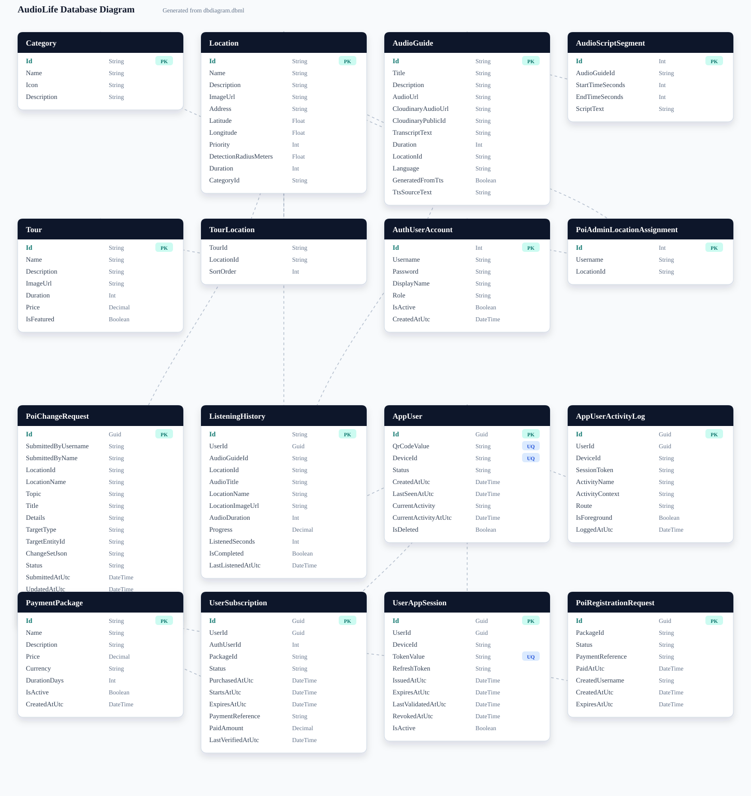
ER Diagram — SQL Server
ERD này được lấy từ liên kết diagrams.net/Google Drive và được lưu cục bộ trong project để PRD hiển thị độc lập với mạng.
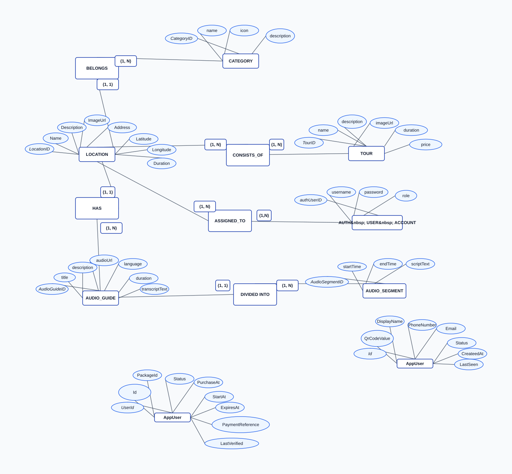
Mobile App — 19 Pages, 14 ViewModels
Kiến trúc MVVM + Dependency Injection với
CommunityToolkit.Mvvm. Tất cả ViewModels dùng
[ObservableProperty], [RelayCommand].
Services được inject qua constructor. Navigation qua Shell routing.
IntroPage
Onboarding giới thiệu app. Chuyển đến MainPage sau khi hoàn thành.
MainPage
Trang chủ — danh sách locations, categories, featured tours. Search bar.
MapPage
Bản đồ tương tác hiển thị locations. Geolocation tracking 100m radius.
LocationDetailPage
Chi tiết địa điểm — hình ảnh, mô tả, audio guides, feedbacks. Favorite toggle.
AudioPlayerPage
Player chuyên nghiệp: play/pause/seek/volume. Transcript hiển thị đồng bộ theo AudioScriptSegment.
ToursPage + TourDetailPage
Danh sách tours + chi tiết tour với locations theo thứ tự SortOrder.
SearchPage
Tìm kiếm locations theo tên, mô tả, địa chỉ.
FavoritesPage
Danh sách địa điểm yêu thích (SQLite local).
HistoryPage
Lịch sử nghe audio — ListeningHistory với listened seconds, completion.
DownloadsPage
Audio đã tải về offline. Quản lý dung lượng. Xóa downloads.
ProfilePage + EditProfilePage
Hồ sơ người dùng. Chỉnh sửa thông tin.
SettingsPage + LanguageSection
Cài đặt app. Chọn ngôn ngữ (vi/en/zh/ja/ko/fr).
HelpPage + AboutPage
Hướng dẫn sử dụng và thông tin ứng dụng.
Audio Playback — Plugin.Maui.Audio
AudioService dùng Plugin.Maui.Audio (IAudioManager) để phát MP3. Hỗ trợ play/pause/resume/stop/seek/volume. Position timer cập nhật mỗi 500ms. AudioScriptSegment hiển thị transcript đồng bộ theo thời gian.
Geolocation — Nearby Detection
GeolocationService theo dõi vị trí mỗi 60 giây. Khi phát hiện
location trong bán kính 100m (Haversine), phát sự kiện
NearbyLocationDetected. Chỉ trigger 1 lần cho mỗi
location (theo dõi _lastNearestLocationId).
Tracking Config
- Radius: 100m (0.1 km)
- Interval: 60 seconds
- Accuracy: GeolocationAccuracy.Medium
- Timeout: 10 seconds per request
Haversine Formula
Earth radius 6,371 km. Tính khoảng cách chính xác giữa 2 tọa độ GPS. Kết quả trả về km.
Mobile API — 19 Routes
| Endpoint | Method | Mô Tả |
|---|---|---|
/api/mobile/health |
GET | Health check |
/api/mobile/categories |
GET | Tất cả categories + location count |
/api/mobile/locations |
GET | Tất cả locations + audio guides |
/api/mobile/locations/{id} |
GET | Chi tiết location + audio guides |
/api/mobile/locations/by-category/{categoryId}
|
GET | Locations theo category |
/api/mobile/locations/search?query= |
GET | Tìm kiếm (Name, Description, Address) |
/api/mobile/locations/nearby?lat=&lng=&radiusKm=
|
GET | Nearby (Haversine, default 100m) |
/api/mobile/tours |
GET | Tất cả tours + location IDs |
/api/mobile/tours/{id} |
GET | Chi tiết tour |
/api/mobile/tours/featured |
GET | Tours nổi bật (IsFeatured=true) |
/api/mobile/audio/by-location/{locationId}
|
GET | Audio guides + script segments theo location |
/api/mobile/audio/{id} |
GET | Chi tiết audio guide + segments |
ER Diagram — SQL Server (16 Tables)
TTS Service — Edge Neural + Google Fallback
EdgeTextToSpeechService dùng thư viện
EdgeTTS (NuGet) để tạo audio MP3 từ text. 6 Neural
voices. Khi Edge trả về 403, tự động fallback sang Google Translate
TTS (free). Text dài được split thành chunks 180 ký tự, merge MP3 và
strip ID3 headers.
| Language | Edge Voice | Google Code | vi - Tiếng Việt | vi-VN-HoaiMyNeural | vi | en - English | en-US-JennyNeural | en |
|---|---|---|
| zh - Trung | zh-CN-XiaoxiaoNeural | zh-CN |
| ja - Nhật | ja-JP-NanamiNeural | ja |
| ko - Hàn | ko-KR-SunHiNeural | ko |
| fr - Pháp | fr-FR-DeniseNeural | fr |
Cloudinary Audio Storage
CloudinaryAudioStorageService upload audio lên
Cloudinary CDN. Dùng VideoUploadParams (Cloudinary coi
audio là video). URL cuối cùng được transform:
/video/upload/ →
/video/upload/f_mp3/ để on-the-fly convert sang MP3.
Mỗi file có unique PublicId.
Upload Flow
- IFormFile hoặc Stream → Cloudinary API
- Folder:
audio/ - PublicId:
{prefix}-{GUID} - URL transform: f_mp3 on-the-fly
Stored Fields
AudioUrl— URL cuối cùng (f_mp3)CloudinaryAudioUrl— URL gốc CloudinaryCloudinaryPublicId— ID để manage/delete
Authentication & RBAC
Cookie Authentication với CookieAuthenticationDefaults.
2 roles: SystemAdmin và PoiAdmin.
Auth source: appsettings.json (config users) +
AuthUserAccounts table (DB users). PoiAdmin được gán
location qua PoiAdminLocationAssignments. Authorization
policies: SystemAdminOnly, PoiAdminOnly.
| Role | Access | Folders |
|---|---|---|
| SystemAdmin | Full access: Admin, Categories, Locations, Tours, AudioGuides | /Admin/*, /Categories/*, /Locations/*, /Tours/*, /AudioGuides/* |
| PoiAdmin | Địa điểm được gán: sửa Location, tạo/sửa AudioGuide, gửi ChangeRequest | /Shop/* |
CanAccessLocation() trước mỗi thao tác. SystemAdmin có
thể chuyển/gán lại locations giữa các PoiAdmin.
POI Change Request Workflow
PoiChangeRequestService quản lý quy trình: PoiAdmin gửi
yêu cầu thay đổi (Location hoặc AudioGuide) → SystemAdmin duyệt
(Approved/Rejected). Khi Approved, hệ thống tự động
TryApplyChangeSetAsync() — parse ChangeSetJson và apply
từng field vào entity.
TargetType
-
Location— sửa Name, Description, Address, ImageUrl, Lat/Lng, Duration -
AudioGuide— sửa Title, Description, AudioUrl, Cloudinary fields, Language, Transcript. Hỗ trợcreate-audio-guideaction.
Status Flow
-
Pending→InReview→Approved/Rejected - ChangeSetJson lưu JSON diff của các fields thay đổi
- ReviewNote: ghi chú của admin khi duyệt/từ chối
SystemAdmin — Razor Pages
Admin/Index
Dashboard tổng quan: stats, recent activities.
Admin/Users
CRUD AuthUserAccounts. Gán role, assign locations cho PoiAdmin.
Admin/ChangeRequests
Duyệt/từ chối POI Change Requests. Xem diff ChangeSetJson.
Admin/Reports
Báo cáo thống kê: listening, feedback, locations.
Admin/Settings
Cấu hình hệ thống.
Locations/*
CRUD Locations + MapView (bản đồ tổng quan).
Categories/*
CRUD Categories (Quán ăn, WC, Bãi xe...).
Tours/*
CRUD Tours + gán TourLocations với SortOrder.
AudioGuides/*
CRUD AudioGuides + TTS generation + Cloudinary upload.
PoiAdmin (Shop) Portal
Shop/Index
Dashboard của PoiAdmin — chỉ hiện locations được gán.
Shop/Locations/Edit
Sửa thông tin location (chỉ những địa điểm được assign).
Shop/AudioGuides/*
CRUD audio guides cho locations của mình. TTS generate + Cloudinary upload.
Shop/ChangeRequests
Gửi yêu cầu thay đổi. Xem trạng thái pending/approved/rejected.
Shop/Analytics
Thống kê nghe audio cho locations của mình.
Shop/Reviews
Xem feedback/reviews của du khách cho locations.
State Diagrams
State machine based on App.InitializeStartupAsync, AppSessionStore, RemoteApiService session endpoints, LanguageSection and AppHeartbeatService.
stateDiagram-v2
[*] --> StartupLoading
StartupLoading --> DeepLinkPending: App.HasPendingDeepLink
DeepLinkPending --> QrPayloadParsed: QrCodePayloadService.TryParseAudioPayload
QrPayloadParsed --> PaymentPlanSelection: CompleteQrOnboardingAsync
DeepLinkPending --> StartupLoading: invalid deep link ignored
StartupLoading --> ReadLocalSession: no pending deep link
ReadLocalSession --> ShellAuthenticated: local snapshot valid
ReadLocalSession --> ShellOfflineGuest: offline and no valid snapshot
ReadLocalSession --> IntroPreAuth: online and no local session
ShellAuthenticated --> ServerVerification: internet available
ShellOfflineGuest --> [*]: local catalog fallback
ServerVerification --> ShellAuthenticated: by-device and validate success
ServerVerification --> IntroPreAuth: no session or invalid subscription
ServerVerification --> IntroPreAuth: API failure with no local session
IntroPreAuth --> QrScanner: camera permission granted
IntroPreAuth --> IntroPreAuth: camera denied
QrScanner --> PaymentPlanSelection: QR parsed
QrScanner --> QrScanner: invalid QR or rescan
PaymentPlanSelection --> PaymentCheckout: synced packages and plan selected
PaymentCheckout --> PaymentCheckout: payment failed or validation pending
PaymentCheckout --> LanguageSelection: payment complete and session valid
LanguageSelection --> ShellAuthenticated: user chooses language
ShellAuthenticated --> HeartbeatRunning: NavigateToShellRoot
HeartbeatRunning --> ShellAuthenticated: heartbeat success refreshes snapshot
HeartbeatRunning --> IntroPreAuth: heartbeat invalid or expired
State machine implemented by AudioService and observed by AudioPlayerViewModel and AutoPlaybackService.
stateDiagram-v2
[*] --> None
None --> Loading: PlayAsync(url, locationId, guideId)
Stopped --> Loading: new play request
Paused --> Loading: switch guide
Playing --> Loading: switch guide or manual override
Loading --> Playing: player loaded and Play starts
Loading --> Error: empty URL, HTTP failure, player init failure
Loading --> Stopped: stale request cancelled
Playing --> Paused: PauseAsync
Paused --> Playing: ResumeAsync
Playing --> Stopped: StopAsync or PlaybackEnded
Paused --> Stopped: StopAsync
Error --> Loading: retry
Error --> None: dispose or reset
Stopped --> None: no active URL
note right of Playing
Position timer updates UI every 150ms
History sync is triggered by AudioPlayerViewModel
Play requests are throttled by a 2.5s cooldown
end note
State machine based on GeolocationService plus AutoPlaybackService proximity, scoring, cooldown, queue and manual override behavior.
stateDiagram-v2
[*] --> Inactive
Inactive --> Tracking: App enters shell and starts services
Tracking --> PermissionDenied: location permission denied
PermissionDenied --> Inactive
Tracking --> Scanning: GPS location received every 5s
Scanning --> NoCandidate: no nearby POI
NoCandidate --> Tracking
Scanning --> CandidateScoring: candidates within effective scan radius
CandidateScoring --> WaitingForEntry: best candidate farther than 5m
WaitingForEntry --> Tracking
CandidateScoring --> CooldownCheck: selected POI within 5m
CooldownCheck --> AskReplay: played within 5 minutes
AskReplay --> Tracking: user says no
AskReplay --> QueueDecision: user says yes
CooldownCheck --> QueueDecision: no cooldown block
QueueDecision --> Queued: audio is already playing
QueueDecision --> AutoPlaying: player is idle
AutoPlaying --> Tracking: playback stopped
Queued --> AutoPlaying: current audio stops and queue dequeues
Tracking --> ExitedPoi: distance is at least 20m
ExitedPoi --> Tracking: remove from inside set
AutoPlaying --> Interrupted: manual playback starts another guide
Interrupted --> ResumePrompt: manual audio stops
ResumePrompt --> AutoPlaying: resume interrupted or replay from start
ResumePrompt --> Tracking: skip resume
Tracking --> Inactive: Stop or dispose
State machine from DbPoiChangeRequestService.TryUpdateStatusAsync and the SystemAdmin review page.
stateDiagram-v2
[*] --> Pending: PoiAdmin submits request
Pending --> InReview: SystemAdmin marks in review
Pending --> Applying: SystemAdmin approves directly
InReview --> Applying: SystemAdmin approves
Pending --> Rejected: SystemAdmin rejects with note
InReview --> Rejected: SystemAdmin rejects with note
Applying --> Approved: ChangeSet applied and saved
Applying --> Pending: apply failed, status not changed
Approved --> [*]
Rejected --> [*]
note right of Applying
ChangeSetJson may create, update or delete Location and AudioGuide
AudioGuide approval can generate TTS and upload to Cloudinary
end note
State machine used by RemoteApiService for home, map, search, audio, tours and history data retrieval.
stateDiagram-v2
[*] --> RemoteRequest
RemoteRequest --> RemoteSuccess: API returns data
RemoteSuccess --> CacheUpdated: catalog payload saved to SQLite cache
CacheUpdated --> LocalizedResult: apply ContentLocalizationMapper
RemoteRequest --> CacheLookup: timeout or backend unavailable
CacheLookup --> CachedResult: cached JSON exists
CachedResult --> LocalizedResult
CacheLookup --> FallbackSampleData: no cache
FallbackSampleData --> LocalizedResult
LocalizedResult --> [*]
Sequence Diagrams
Quy trình gọi tự động kích hoạt audio khi đã xác định được điểm phù hợp từ hàng đợi.
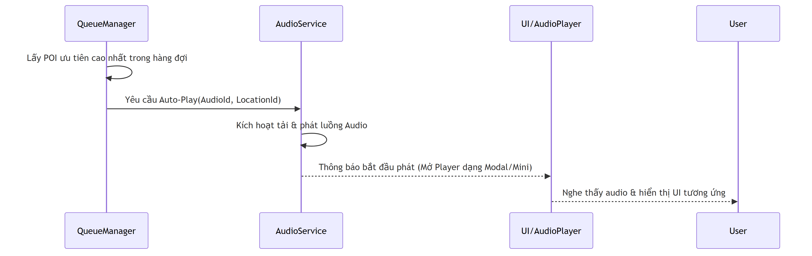
Giao tiếp giữa người dùng và bộ điều khiển Audio (Play, Pause, Seek).
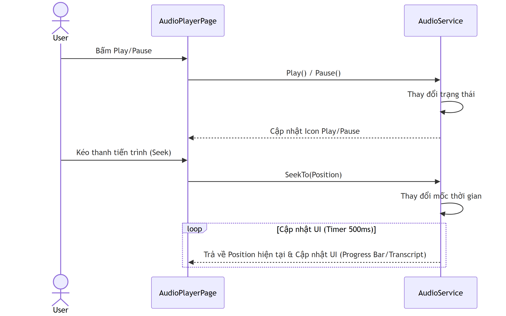
Ghi nhận quá trình nghe của người dùng sau khi hoàn tất hoặc dừng audio.
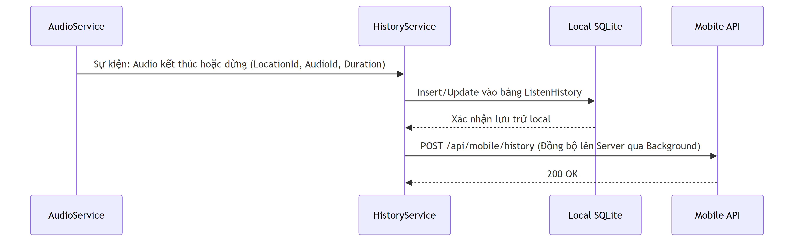
Kiểm tra dữ liệu local trước khi lấy dữ liệu qua mạng.
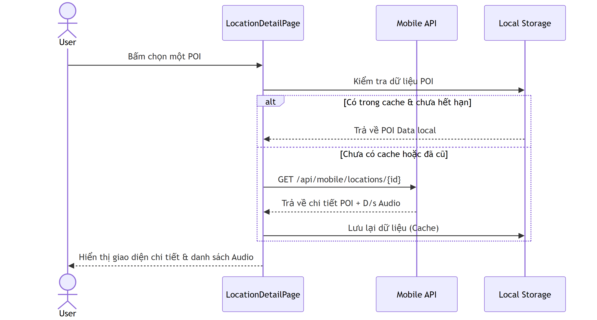
Theo dõi vị trí thiết bị và lấy dữ liệu các POI nằm trong bán kính cho phép.
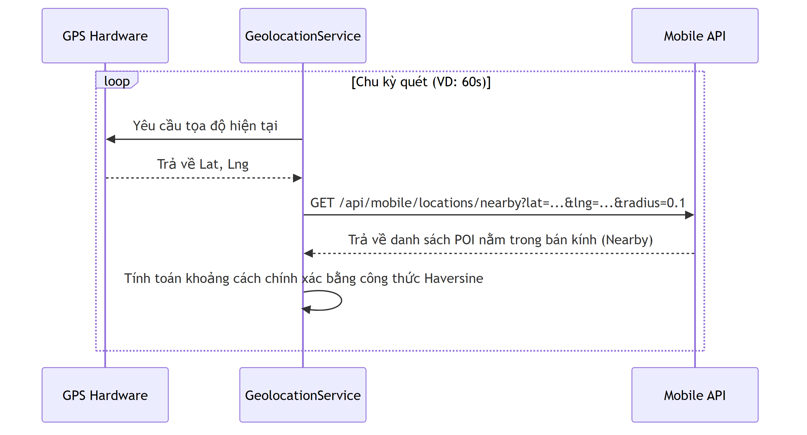
Đẩy các POI nhận được từ tính năng định vị vào một hàng chờ để xử lý tuần tự.
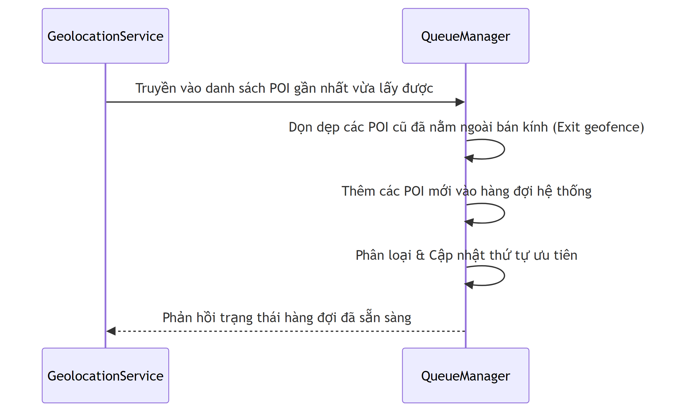
Các lớp bảo vệ nhằm tránh việc spam phát audio hoặc lặp lại cùng một địa điểm liên tục.
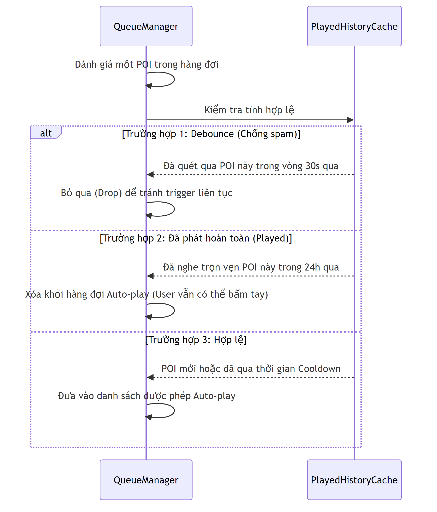
Thuật toán tính điểm (Scoring) để chọn ra POI nào sẽ được phát audio trước khi có nhiều điểm ở gần nhau.
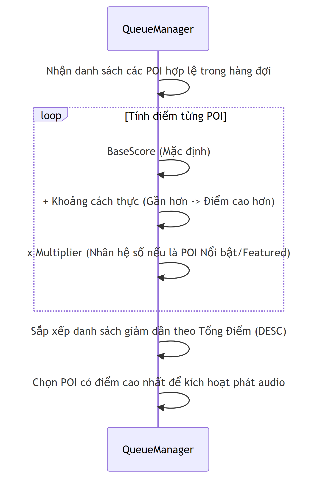
Tìm kiếm tức thời (với Debounce) để giảm tải request.
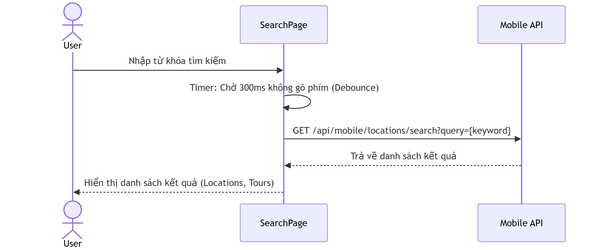
Hiển thị mô tả và lộ trình các điểm dừng.
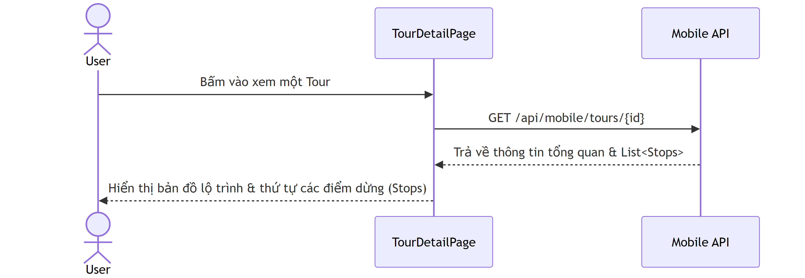
Lưu trạng thái và giúp người dùng tiếp tục tour từ điểm đến hiện tại.
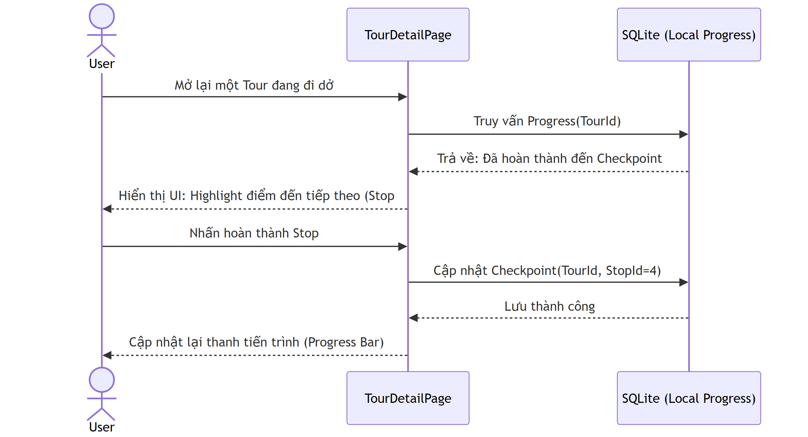
Hai luồng vào duy nhất để lấy được quyền truy cập app.
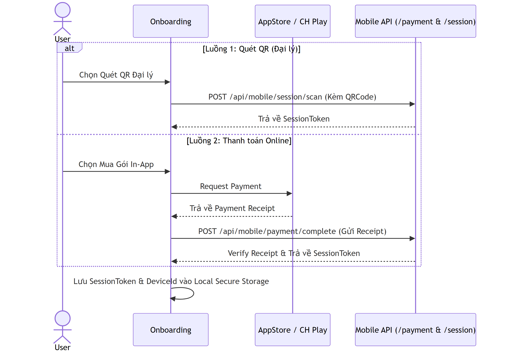
Cơ chế kiểm tra quyền truy cập mỗi khi app khởi động.
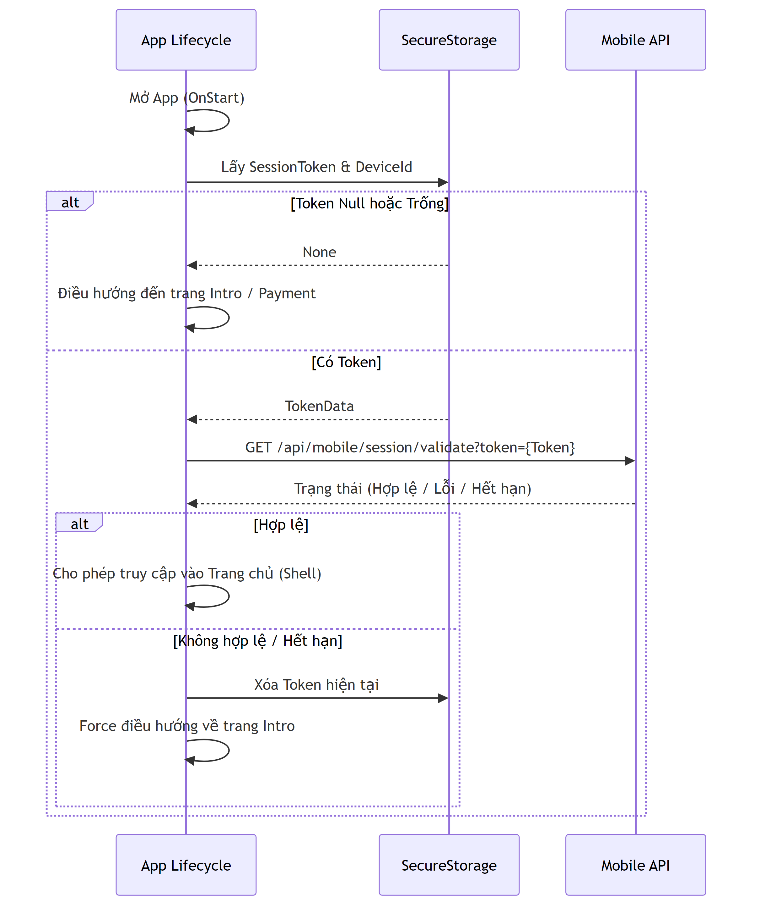
Cập nhật trạng thái 'đang hoạt động' của người dùng lên server và thu hồi quyền ngay khi hết hạn.
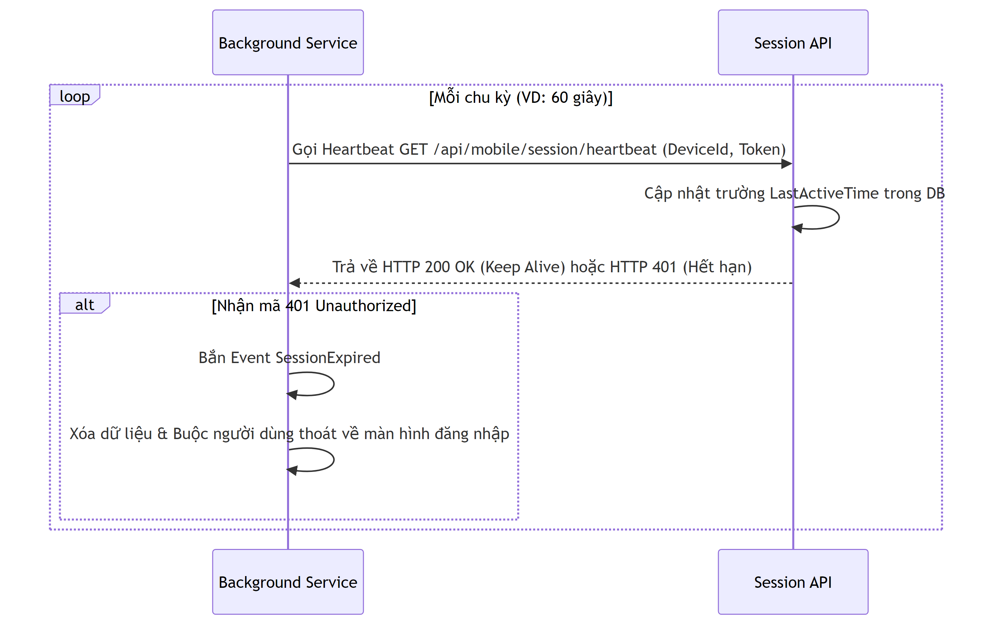
Dịch thuật giao diện ngay lập tức khi người dùng thay đổi tùy chọn ngôn ngữ.
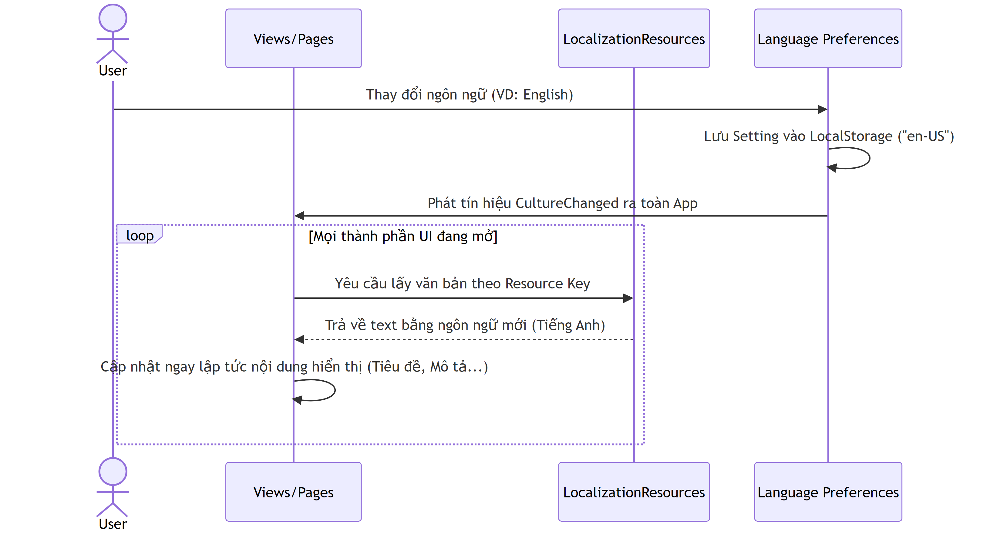
Activity Diagrams
flowchart TD
A([App window created]) --> B[Show StartupLoadingPage]
B --> C{Pending deep link?}
C -->|Yes| D[Parse QR audio payload]
D --> E{Payload valid?}
E -->|Yes| F[Store pending QR payload]
F --> G[Open PaymentPlanSelectionPage]
E -->|No| H[Ignore deep link]
H --> I[Continue startup]
C -->|No| I
I --> J[Resolve IAppSessionStore and IApiService]
J --> K[Get or create DeviceId]
K --> L[Read local AppSessionSnapshot]
L --> M{Local snapshot valid or offline fallback allowed?}
M -->|Yes| N[NavigateToShellRoot]
N --> O[Start heartbeat]
N --> P[Start geolocation and auto playback]
M -->|No| Q{Internet available?}
Q -->|No| R[NavigateToIntro]
Q -->|Yes| S[Call session/by-device]
S --> T{Device has session?}
T -->|No| U[Clear snapshot and go Intro]
T -->|Yes| V[Call session/validate]
V --> W{Valid subscription?}
W -->|Yes| X[Save refreshed snapshot]
X --> N
W -->|No| U
flowchart TD
A([IntroPage]) --> B[Request camera permission]
B --> C{Granted?}
C -->|No| D[Stay on Intro]
C -->|Yes| E[Open QrScannerPage]
E --> F[Scan camera, pick image or sample QR]
F --> G{QR parses as audio deep link?}
G -->|No| H[Show invalid message and resume scanner]
G -->|Yes| I[Store QrAudioPayload]
I --> J[Open PaymentPlanSelectionPage]
J --> K[Load payment packages from API]
K --> L{Packages synced?}
L -->|No| M[Block continue or use fallback status]
L -->|Yes| N[User selects package]
N --> O[Open PaymentCheckoutPage]
O --> P[Get DeviceId and existing device session]
P --> Q[POST /api/mobile/payment/complete]
Q --> R[Server creates or updates AppUser]
R --> S[Create or update UserSubscription]
S --> T[Create or refresh UserAppSession]
T --> U[Return session token and expiry]
U --> V[GET /api/mobile/session/validate]
V --> W{Session valid?}
W -->|No| X[Show pending or failed message]
W -->|Yes| Y[Save AppSessionSnapshot]
Y --> Z[Clear pending QR and open LanguageSection]
Z --> AA[NavigateToShellRoot]
flowchart TD
A([Shell authenticated]) --> B[GeolocationService.StartTrackingAsync]
B --> C{Location permission granted?}
C -->|No| Z([Auto playback inactive])
C -->|Yes| D[Every 5s get GPS location]
D --> E[Calculate effective scan radius: 50m to 150m]
E --> F[IApiService.GetNearbyLocationsAsync]
F --> G[Remote API, cache or local fallback]
G --> H{Candidates returned?}
H -->|No| D
H -->|Yes| I[Build candidates with distance and priority]
I --> J{Any candidate within 5m trigger radius?}
J -->|No| K[Keep tracking and update exit set]
K --> D
J -->|Yes| L[Score candidates]
L --> M[Distance 40, approach 30, priority 20, history 10]
M --> N[Select best POI]
N --> O{Already inside this POI?}
O -->|Yes| D
O -->|No| P[Mark as inside]
P --> Q{Played in last 5 minutes?}
Q -->|Yes| R[Ask user whether to replay]
R -->|No| D
R -->|Yes| S[QueueOrPlayAsync]
Q -->|No| S
S --> T{Audio currently playing?}
T -->|Yes| U[Enqueue POI if not already queued]
T -->|No| V[Load first AudioGuide and play CloudinaryAudioUrl or AudioUrl]
U --> W[Wait for AudioService Stopped]
W --> X[Dequeue next POI]
X --> V
V --> D
flowchart TD
A([Page or ViewModel requests data]) --> B{Request type}
B -->|Catalog or search| C[RemoteApiService TryGetAsync]
C --> D{Remote success?}
D -->|Yes| E[Normalize and localize payload]
E --> F[Upsert SQLite JSON cache for catalog]
F --> G[Bind ObservableCollection]
D -->|No| H[Read cached JSON from LocalDatabaseService]
H --> I{Cache available?}
I -->|Yes| E
I -->|No| J[Use ApiService SampleData fallback]
J --> G
B -->|Listening history read| K[GET /api/mobile/history]
K --> L{Remote history returned?}
L -->|Yes| M[Upsert local listening history]
M --> G
L -->|No| N[Load local history]
N --> G
B -->|Listening history write| O[POST /api/mobile/history]
O --> P[Also update local fallback history]
P --> G
flowchart TD
A([Open AudioPlayerPage]) --> B[Read route params: LocationId, AudioGuideId, AudioUrl, PlaybackSource]
B --> C[Load location and audio guides]
C --> D[Resolve preferred or selected guide]
D --> E{Auto play requested?}
E -->|Yes| F[AudioService.PlayAsync]
E -->|No| G[Wait for user command]
G --> H{Command}
H -->|Play/Pause| I[Play, Pause or Resume via AudioService]
H -->|Seek| J[SeekAsync and update position]
H -->|Next/Back| K[SetCurrentAudioGuideAsync]
K --> F
F --> L[AudioService enters Loading]
L --> M{Player loaded?}
M -->|No| N[State Error]
M -->|Yes| O[State Playing and timer ticks]
O --> P[PositionChanged updates slider and transcript segment]
P --> Q{10s elapsed or progress delta >= 3 percent?}
Q -->|Yes| R[SyncListeningHistoryAsync]
R --> S[API/local AddListeningHistoryAsync]
Q -->|No| O
O --> T{Playback stopped?}
T -->|Yes| U[Force history sync]
U --> V{Next guide or tour checkpoint?}
V -->|Yes| K
V -->|No| G
flowchart TD
A([PoiAdmin edits assigned POI or audio]) --> B[Build ChangeSetJson]
B --> C[SubmitAsync stores Pending request]
C --> D[SystemAdmin opens Admin ChangeRequests]
D --> E[Review current values vs proposed values]
E --> F{Decision}
F -->|Reject| G[Require review note]
G --> H[Set status Rejected]
F -->|In review| I[Set status InReview]
I --> D
F -->|Approve| J[TryUpdateStatusAsync Approved]
J --> K[Parse ChangeSetJson]
K --> L{TargetType}
L -->|Location| M{Action}
M -->|create-location| N[Create Location]
M -->|delete-location| O[Delete Location]
M -->|update| P[Apply Location fields]
L -->|AudioGuide| Q{Action}
Q -->|create-audio-guide| R[Create AudioGuide for Location]
Q -->|delete-audio-guide| S[Delete AudioGuide]
Q -->|update| T[Apply AudioGuide fields]
R --> U{__tts_on_approval true?}
T --> U
U -->|No| V[Save DB changes]
U -->|Yes| W[Resolve transcript and language]
W --> X[ITextToSpeechService.SynthesizeAsync]
X --> Y{TTS success?}
Y -->|No| Z[Return false and keep old status]
Y -->|Yes| AA[Upload MP3 via CloudinaryAudioStorageService]
AA --> AB[Update AudioUrl, CloudinaryAudioUrl, PublicId, TTS metadata]
AB --> V
N --> V
O --> V
P --> V
S --> V
V --> AC[Set status Approved, UpdatedBy, ReviewNote]
flowchart TD
A([Mobile calls /api/mobile]) --> B{Endpoint group}
B -->|Session by device| C[Cleanup expired sessions and users]
C --> D[Find active UserAppSession by DeviceId]
D --> E[Return HasSession and subscription snapshot]
B -->|Session validate| F[Find session by token and device]
F --> G{Session active and not expired?}
G -->|No| H[Return IsValid false]
G -->|Yes| I[Find active UserSubscription]
I --> J[Return validation result]
B -->|Heartbeat| K[Find session and AppUser]
K --> L{User and subscription active?}
L -->|No| M[Return SessionValid false]
L -->|Yes| N[Update LastSeen, activity, session validation time]
N --> O[Insert AppUserActivityLog]
O --> P[Return refreshed expiry]
B -->|Catalog| Q[Query EF Core AsNoTracking]
Q --> R[Project locations, audio, tours, categories]
R --> S[Return JSON to RemoteApiService]
B -->|History| T[Read or upsert ListeningHistory]
T --> S
Tech Stack & Constants
Mobile
- .NET MAUI 8 (MVVM)
- CommunityToolkit.Mvvm
- Plugin.Maui.Audio
- SQLite-net (local DB)
- Shell navigation
Web Backend
- ASP.NET Core 8 Razor Pages
- Minimal API (/api/mobile/*)
- EF Core + SQL Server
- Cookie Authentication
- EdgeTTS (NuGet)
- CloudinaryDotNet
Infrastructure
- SQL Server (AudioDB)
- Cloudinary CDN (audio)
- Edge Neural Voices (6 langs)
- Google TTS (fallback)
- Bootstrap 5 (admin UI)
| Constant | Value | Location |
|---|---|---|
| Nearby Radius | 100m (0.1 km) | GeolocationService.cs |
| Tracking Interval | 60 seconds | GeolocationService.cs |
| Position Timer | 500ms | AudioService.cs |
| Cookie Expiry | 8 hours (sliding) | Program.cs |
| Database | AudioDB (SQL Server) | appsettings.json |
| Cloudinary Folder | audio/ | appsettings.json |
| Google TTS chunk | 180 chars max | EdgeTTSService.cs |
| Audio Transform | f_mp3 (on-the-fly) | CloudinaryService.cs |
| SystemAdmin role | SystemAdmin | RoleNames.cs |
| PoiAdmin role | PoiAdmin | RoleNames.cs |
Roadmap
Security
- JWT tokens thay Cookie cho mobile API
- Password hashing (bcrypt/Argon2)
- API rate limiting
- HTTPS enforcement
Features
- Realtime listening analytics dashboard
- Push notifications khi gán POI
- Social sharing / QR code tours
- Multi-language UI (mobile app)
- Payment integration cho tours có phí
Infrastructure
- Docker containerization
- CI/CD pipeline (GitHub Actions)
- Azure deployment
- CDN caching optimization